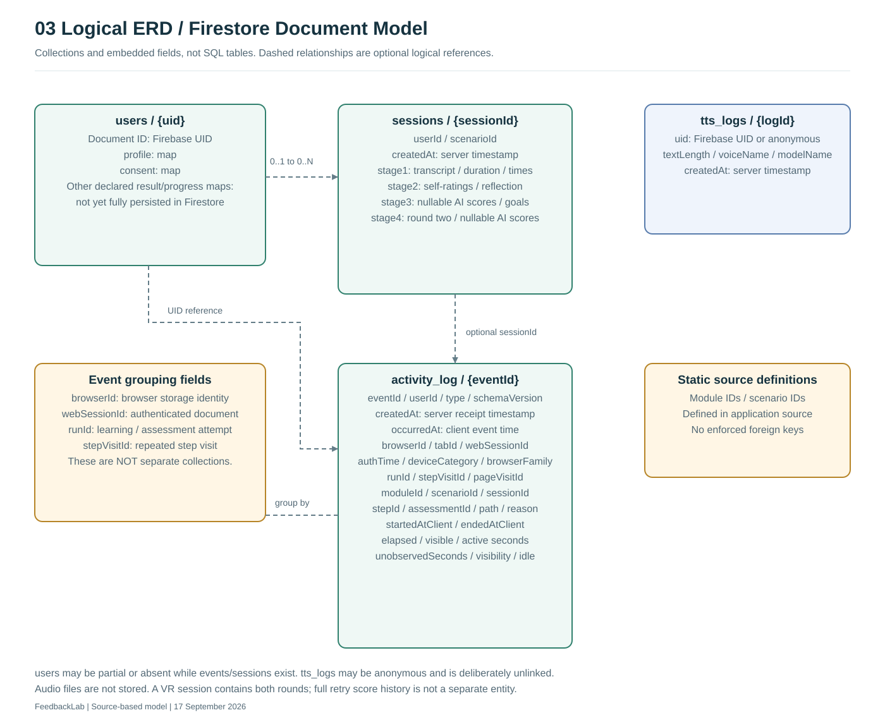
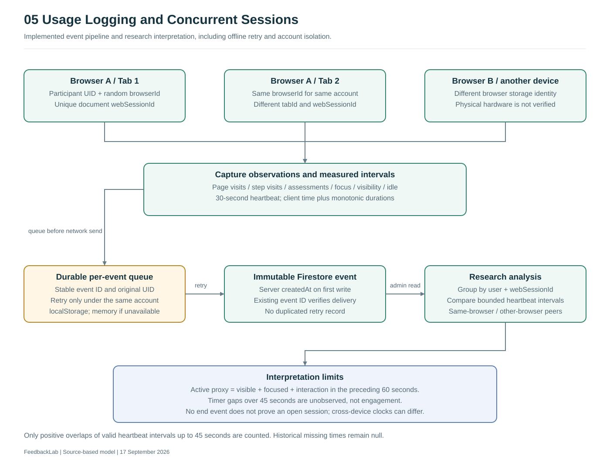

FeedbackLab — System diagrams and DFD Levels 0–2
Level 0: context. Level 1: five main processes. Level 2: all five decompositions. ERD is a separate model.
03 Logical ERD / Firestore Document Model

05 Usage Logging and Concurrent Sessions
